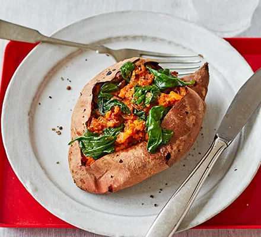

Baked ginger & spinach sweet potato

Description
Bake a spiced sweet potato with spinach for lunch, or as a budget supper for one. It's low-calorie, packed with vitamin C and packs big flavour
Ingredients
- 1 sweet potato
- 2 tsp oil
- ½ onion , finely chopped
- 1 garlic clove , crushed
- small knob of ginger , grated
- 1-2 tsp curry paste (use what you have or buy a Madras or red curry paste)
- knob of butter
- handful of spinach
Steps
- Heat oven to 200C/180C fan/gas 6. Prick the potato and bake it for 40-45 mins or until soft when you squeeze the sides.
- Meanwhile, heat the oil in a small frying pan and fry the onion until softened, add the garlic and cook for 1 min, then add the ginger and curry paste and cook for another min. Stir in the butter and spinach, and continue stirring until the spinach wilts. Season well.
- Cut open the top of the sweet potato, scoop out some of the flesh, add it to the mix in the pan and stir through, then spoon the mixture back into the potato.